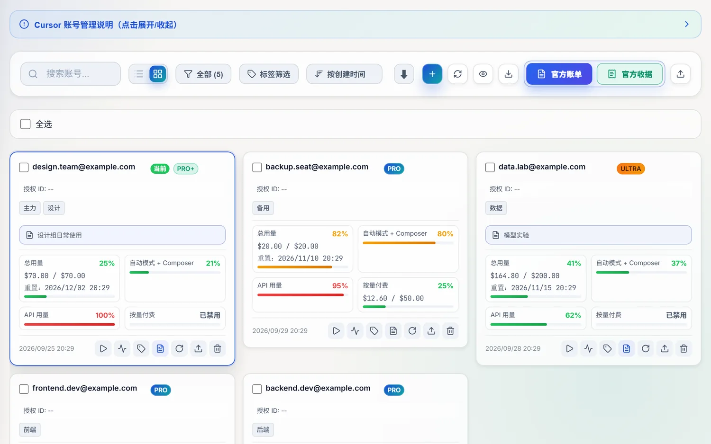
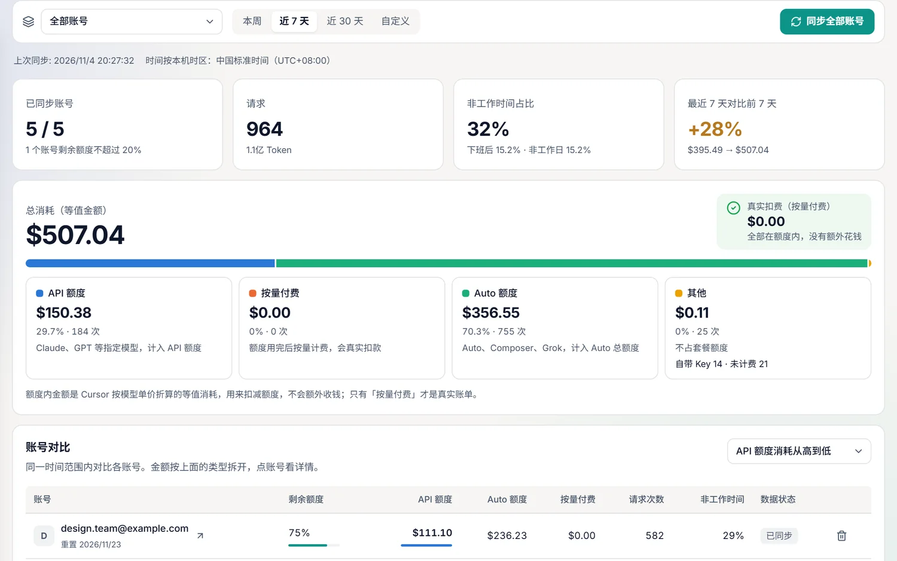
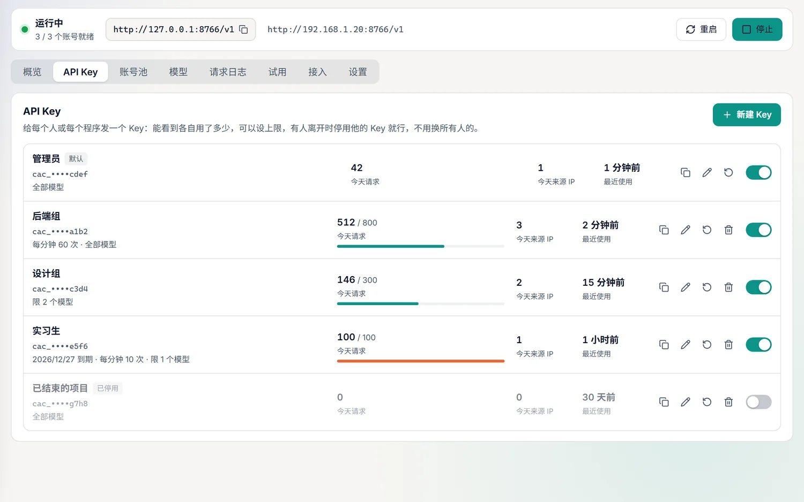
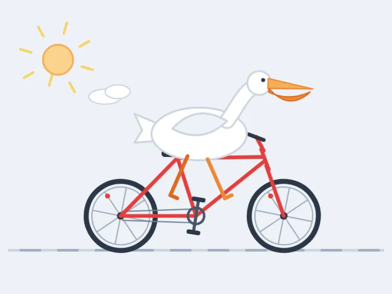
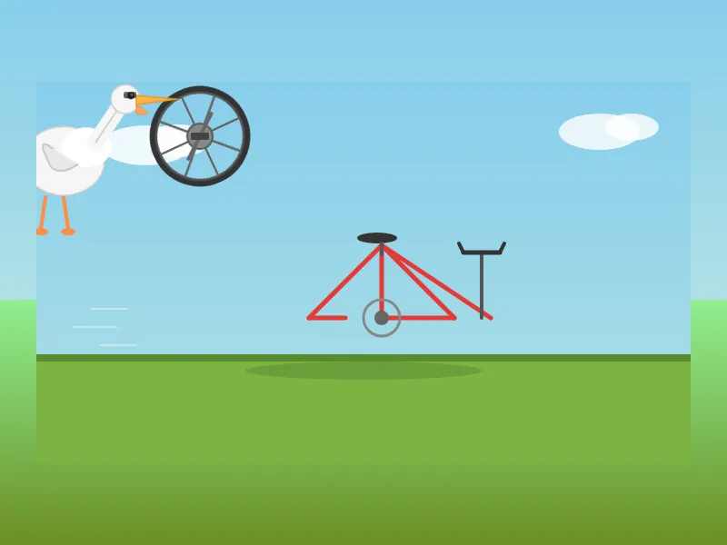
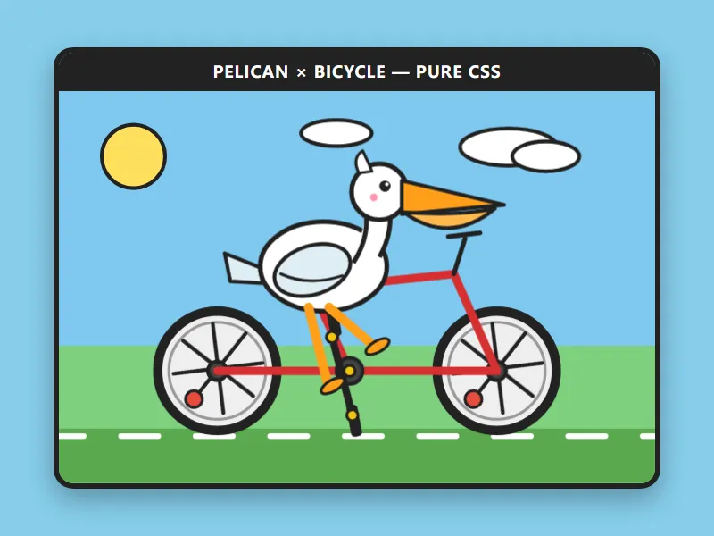

官方账单与收据
按账号和月份批量导出官方 PDF，月底对账不用一个个登录。
所有账号的套餐、用量和重置时间排在一张表里。需要时一键切换，它会写入登录信息、重启 Cursor，再确认切换真的生效。

把费用拆成 API 额度、Auto 额度和真实扣费，并和 Cursor 官方的百分比自动核对。一眼就知道真正进账单的有多少。

把账号池变成本地 API，兼容 OpenAI、Anthropic 和 Responses 协议。每个 Key 单独计量、单独限额，有人离开时停用他的 Key 就行。

同一句提示词发给多个模型，在沙箱里并排渲染，打分进排行榜。盲评模式下打完分才揭晓是谁画的。



以上都是模型的真实输出：“画一只骑自行车的鹈鹕”。
按账号和月份批量导出官方 PDF，月底对账不用一个个登录。
只读浏览这台电脑上的 Agent 对话，全文搜索，导出 Markdown。
非工作时间高消耗、当天用量激增时提醒你。默认关闭，阈值可调。
从 GitHub Releases 下载并校验新版本，支持断点续传。
账号凭据是最敏感的东西，所以这里写明白了。
| 账号凭据 | 加密保存在本机数据目录，只用来请求 Cursor 官方接口 |
|---|---|
| 用量记录 | 只存时间、模型、Token 和费用，不存对话内容；保留天数可调，可一键清除 |
| 网关日志 | 只记 Key、来源 IP、模型、状态和耗时，不存提示词和回答 |
| 联网请求 | Cursor 官方接口、Stripe 账单文件、GitHub 更新；节假日数据只在你点击时获取 |
| 发给作者的数据 | 没有。这个项目没有自己的服务器 |
不是。这是独立的第三方工具，用到的部分接口是 Cursor 网页和客户端自己用的内部接口，Cursor 改动后可能需要跟着更新。
工具本身免费，按 CC BY-NC-SA 4.0 授权，限非商业用途。Cursor 的订阅和用量费用由 Cursor 收取。
大多不是。额度内的金额是 Cursor 按模型单价折算的等值消耗，只有“按量付费”才是真实账单，页面上会分开显示。
直接共用账号时不能，Cursor 没有提供可靠的数据。如果每人用自己的网关 Key，就能看到每个 Key 的用量和来源 IP。统计结果只描述使用情况，不代表某个人的行为。
可能有。多人共用账号或通过网关转发，可能不符合 Cursor 的使用条款，也可能触发风控，请自行评估。团队长期使用建议考虑 Cursor 的团队方案。